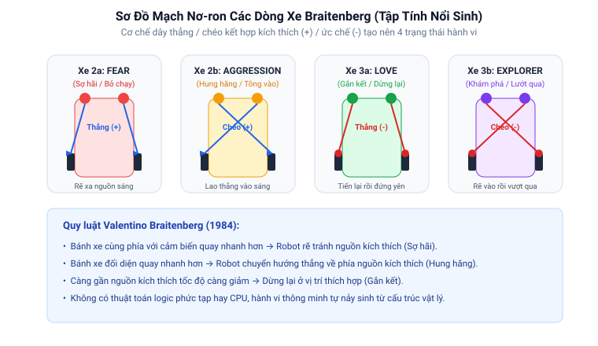

3.1 Vòng lặp Nhận thức - Hành động (Perception-Action Loop)
Hành vi phản xạ (Reactive Behavior) là mô hình điều khiển trực tiếp nối tín hiệu cảm biến tới cơ cấu chấp hành mà không thông qua mô hình biểu diễn thế giới phức tạp. Ưu điểm vượt trội là độ trễ gần như bằng 0, cho phép robot phản ứng tức thì với các mối nguy hiểm cận kề.
3.2 Các Phương tiện Braitenberg (Braitenberg Vehicles)
Năm 1984, nhà thần kinh học Valentino Braitenberg đề xuất một thí nghiệm tư duy nổi tiếng: bằng cách thay đổi cấu hình kết nối dây điện giữa cảm biến ánh sáng và động cơ bánh xe, những cỗ máy đơn giản nhất có thể biểu lộ các "cảm xúc" phức tạp như sinh vật sống:

- Xe 2a - Sợ hãi (Fear): Kết nối thẳng cùng bên (Ipsilateral Excitatory). Cảm biến trái kích thích motor trái; cảm biến phải kích thích motor phải. Khi nguồn sáng ở bên phải, motor phải quay nhanh hơn đẩy robot rẽ ngoặt sang trái trốn chạy khỏi nguồn sáng.
- Xe 2b - Hung hăng (Aggression): Kết nối chéo (Contralateral Excitatory). Cảm biến trái kích thích motor phải; cảm biến phải kích thích motor trái. Khi nguồn sáng ở bên phải, motor trái quay nhanh hơn đẩy robot hướng thẳng đầu và lao vọt về phía nguồn sáng.
- Xe 3a - Yêu thương (Love): Kết nối thẳng ức chế (Ipsilateral Inhibitory). Ánh sáng làm giảm tốc motor cùng phía. Robot tiến dần về nguồn sáng, giảm tốc độ và dừng lại âu yếm trước ngọn đèn.
- Xe 3b - Thám hiểm (Explorer): Kết nối chéo ức chế (Contralateral Inhibitory). Robot giảm tốc độ motor đối diện khi tới gần ánh sáng, lách qua nguồn sáng và tiếp tục hành trình khám phá không gian mới.
3.3 Bám Vạch Dẫn Hướng (Line Following) & Bộ điều khiển Ngưỡng
Hành vi bám đường sử dụng cặp cảm biến quang trở đo độ phản xạ mặt sàn (nền sáng phản xạ cao, vạch đen phản xạ thấp). Thuật toán cơ bản áp dụng điều khiển phân ngưỡng (Bang-Bang Control):
$$v_l = v_0 - K \cdot (s_l - s_r), \quad v_r = v_0 + K \cdot (s_l - s_r)$$
Nếu sai lệch vượt ngưỡng, một bánh xe dừng hẳn hoặc quay ngược chiều để đưa vạch đen trở lại vị trí trung tâm.
3.4 Trọng tài Hành vi: Kiến trúc Phân tầng Subsumption của Rodney Brooks
Khi robot có nhiều hành vi xung đột (ví dụ: vừa muốn bám vạch tiến tới, vừa phát hiện vật cản cần tránh), kiến trúc Subsumption tổ chức các hành vi thành các tầng ưu tiên (Layers). Tầng cao hơn (Tránh va chạm) có quyền triệt tiêu (Suppress) hoặc ghi đè (Inhibit) tín hiệu điều khiển của tầng thấp hơn (Tiến tới mục tiêu).
🔢 TÍNH TOÁN QUỸ ĐẠO BẺ LÁI CỦA XE BRAITENBERG 2B
Bài toán: Xe Braitenberg 2b (Hung hăng) có khoảng cách 2 bánh xe $b = 12\text{ cm}$. Hai cảm biến ánh sáng đặt ở góc trước cách nhau $w = 10\text{ cm}$. Nguồn sáng phát cường độ $I_0 = 1000\text{ lux}$. Robot nhận tín hiệu ánh sáng $s_l = 400\text{ lux}$ ở cảm biến trái và $s_r = 750\text{ lux}$ ở cảm biến phải. Hệ số chuyển đổi vận tốc motor là $k = 0.05\text{ (m/s)/lux}$. Hãy tính vận tốc góc bẻ lái $\omega$ của robot.
Xe 2b nối chéo kích thích: cảm biến trái điều khiển bánh phải, cảm biến phải điều khiển bánh trái:
$v_r = k \cdot s_l$, $\quad v_l = k \cdot s_r$
$v_l = 0.05 \times 750 \times 10^{-3} = 0.0375\text{ m/s} = 3.75\text{ cm/s}$
$v_r = 0.05 \times 400 \times 10^{-3} = 0.0200\text{ m/s} = 2.00\text{ cm/s}$
Áp dụng động học vi sai:
$\omega = \frac{v_r - v_l}{b} = \frac{0.0200 - 0.0375}{0.12} = \frac{-0.0175}{0.12} = -0.1458\text{ rad/s}$
Dấu âm chứng minh robot quay sang phải (hướng thẳng về nguồn sáng mạnh hơn!).
Vận tốc tịnh tiến trung bình: $v = \frac{v_r + v_l}{2} = \frac{0.0575}{2} = 0.02875\text{ m/s}$
Bán kính quay: $R = \frac{v}{\omega} = \frac{0.02875}{-0.1458} \approx -0.197\text{ m} = -19.7\text{ cm}$.
📌 KẾT LUẬN & ĐÁNH GIÁ KỸ THUẬT
Mô hình phương tiện Braitenberg chứng minh nguyên lý điều khiển phản xạ: Kết nối cảm biến chéo với hàm ức chế tạo ra hành vi né tránh nguồn sáng thông minh mà không cần bộ xử lý tính toán phức tạp.
🛠️ CẦU NỐI KIẾN TRÚC ROS 2
Mô hình phản xạ và phân tầng hành vi Subsumption ngày nay được triển khai trong ROS 2 thông qua Nav2 Behavior Trees kết hợp các plugin RecoveryNode và PipelineSequence. Khi cảm biến laser phát hiện vật cản nguy cấp, node kiểm soát an toàn (Costmap Safety layer) lập tức chặn lệnh từ Global Planner và phát xung dừng khẩn cấp.